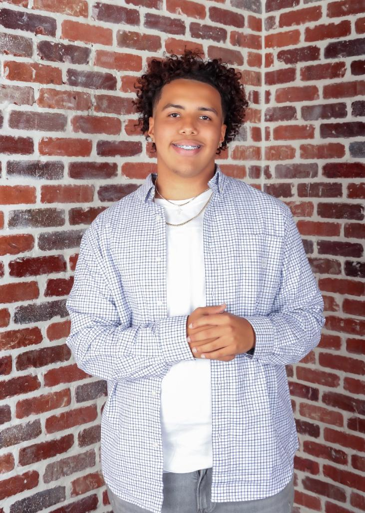

Welcome to the about me page
 Hello all, my name is Noah and I reside in Mcdonough, GA. I was originally born in Japan to an African American father and an Australian mother. I moved to America when I was about 3 years old to Seattle, Washington. I then moved to Alabama then to here in 2017 where I currently reside.
I graduated from Duthctown Highschool in 2022 and am currently in my Sophomore year at Kennesaw State University. I am currently studying Information Technology with Concentration in Cyber Operations security I was interested in this field because since a kid I have always been interested in technology and how it works. I first started working with technoligy programs like photoshop at the age of 12, making digital art for clients of social media platforms. I then started becoming interested in other areas of the technology world such as database and network configuration, which led me to what I study now.
My current goal is to build up my resume in hopes to land an internship sometime soon. I plan to gather as much information from this internship as I can so I can be fully prepared for an actual job when I graduate. I want to work hard in hopes to land a job at a big company like Microsoft, Apple, or Sony. My goal in life is just to be successful to provide for my family and loved ones.